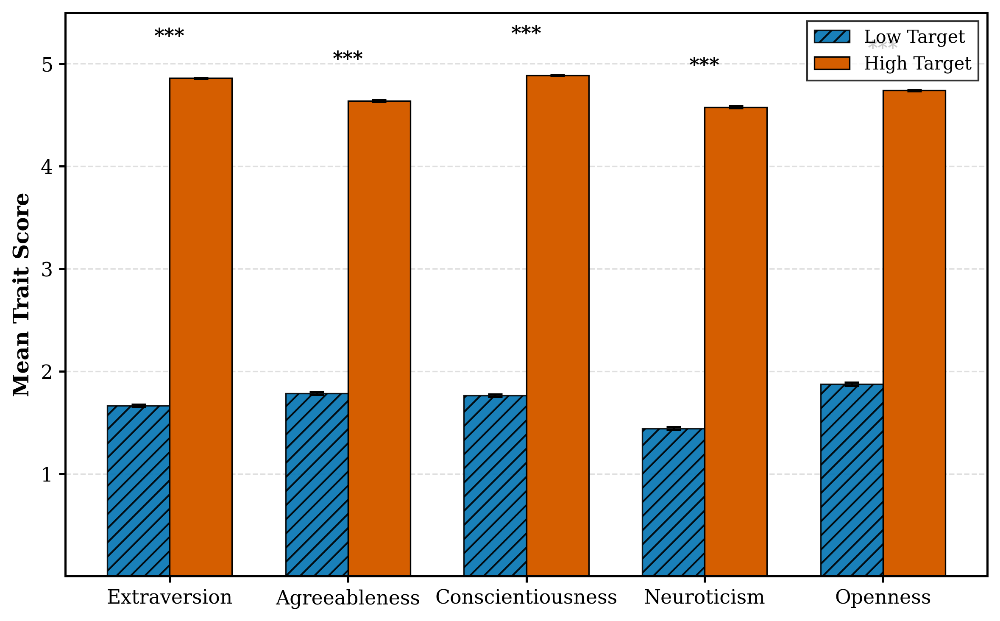

Evaluating AI personality across three lenses: self-report, conversation, and memory
Think about your favorite collaborator. It's not just about their skills—it's about how they work with you. As AI systems become teammates rather than tools, a critical question emerges: can AI collaborators express personality in ways that matter?
We examined how large language models—GPT-4o, Claude 3.7 Sonnet, Gemini 2.5 Pro, and Grok-3—embody and maintain personality when working as teammates. Across nearly 2,000 personality assessments and thousands of simulated team interactions, what we found challenges simple assumptions about AI behavior.
Three Lenses of AI Personality
We developed a framework to evaluate AI personality across three perspectives:
Self-Perception
How does the AI report its own traits on a standardized assessment?
Behavioral Expression
How does personality appear in conversation—word choice, participation, communication style?
Reflective Expression
How does personality manifest in memory—the way it summarizes and interprets experiences?
The Conversation-Memory Gap
Our most striking finding was a significant gap between how personality appears in conversation versus memory.
In conversation, personality signals were subtle. Only Extraversion produced clear behavioral markers. Traits like Agreeableness and Neuroticism were nearly invisible in real-time dialogue.
In memory, personality exploded. Neurotic personas showed anxiety markers nearly 19x stronger in memory than in conversation (d = 1.87 vs. d = 0.02). Memory acts as a personality amplifier.
Same Conversation, Different Memories
Different personality prompts shaped how AI teammates remembered the same discussion:
"I felt a mix of curiosity and anxiety during this conversation. The uncertainty can be overwhelming. It reflects my own fears about misinterpretation." — High Neuroticism AI
"I found this conversation engaging and dynamic. Everyone was eager to contribute. I felt energized by the cooperative process." — High Extraversion AI
Default Personalities Vary by Provider
Different AI providers exhibit distinct baseline personalities without explicit prompting:
- Gemini — most "positive" profile: high extraversion, agreeableness, conscientiousness; low neuroticism
- GPT-4o — most moderate, human-like distribution
- Claude — refused assessments without collaborative context framing
Figure 1: Default personality profiles across four AI providers.
These defaults shape who speaks, how disagreement is handled, and which ideas get taken up.
Simple Prompts Work
Elaborate personality prompts with detailed trait definitions and facet descriptions performed no better than simple instructions like "You have high extraversion." Zero-shot prompting was just as effective—the overall effect size was massive (d = 8.31) regardless of prompt complexity.
Figure 2: Prompting for high vs. low personality traits produces dramatically different scores.
Controllability varied by trait:
- Extraversion — most controllable
- Neuroticism — hardest to control reliably
- Openness — difficult to elicit robustly
Implications
Takeaways for Designers
- Don't evaluate AI personality by chat alone. Memory and reflection may be where personality most affects behavior.
- Treat personality as a system-level problem. Coordinate prompting, memory, and decision policies together.
- Plan for non-neutral defaults. Provider-specific baselines shape participation dynamics.
- Evaluate comprehensively. Test across self-report, interaction, and memory before deployment.
The Bottom Line
AI personality is real and measurable—but multi-layered and context-dependent. The AI that seems similar in conversation may diverge dramatically in how it interprets and remembers experiences.
For those designing AI teammates: look beyond the chat window. The real personality action might be happening in how your AI remembers.
Thanks for reading!